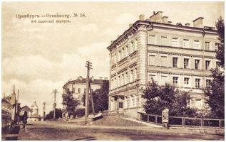
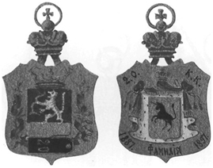

2-й Оренбургский кадетский корпус был учрежден приказом по Военному ведомству от 13 июня 1887 г. К тому моменту в Оренбурге уже действовал Неплюевский кадетский корпус и новое военно-учебное учреждение создавалось на базе Оренбургской военной прогимназии.

Здание 2-го Оренбургского кадетского корпуса. Почтовая открытка. 1900-е гг.
Корпус предназначался преимущественно для воспитания и обучения сыновей офицеров и чиновников, проходивших службу в Туркестанском крае и Закаспийской области. Были в корпусе воспитанники и из других российских провинций и городов, включая Санкт-Петербург и Москву, но это, скорее, были исключения.
Особенностью корпуса было наличие в нем подготовительного класса, который брал на себя подготовку детей в возрасте 9-10 лет к полноценному освоению учебной программы корпуса. Кандидатами на поступление в класс младшего возраста могли быть только дети из тех регионов, где отсутствовала возможность для их подготовки в 1-й класс кадетского корпуса. Дети доставлялись родителями в указанный власти пункт за счет казны. Так они проходили тщательное медицинское освидетельствование и подвергались экзамену по чтению и знанию наизусть самых используемых молитв. Отобранные кандидаты направлялись в Оренбург, где их зачисляли в подготовительный класс.

Жетон кадета 2-го Оренбургского кадетского корпуса
17 мая 1897 г. был утвержден двусторонний жетон 2-го Оренбургского кадетского корпуса, а 12 ноября 1903 г. корпусу было пожаловано знамя, которое было освящено 11 октября 1905 г.
После отречения Николая II от престола 2-й Оренбургский кадетский корпус постигла та же судьба, что и другие кадетский корпуса. В конце 1919 г., когда части Красной армии подошли к Оренбургу, корпус через Орск был эвакуирован в Иркутск и там расформирован.